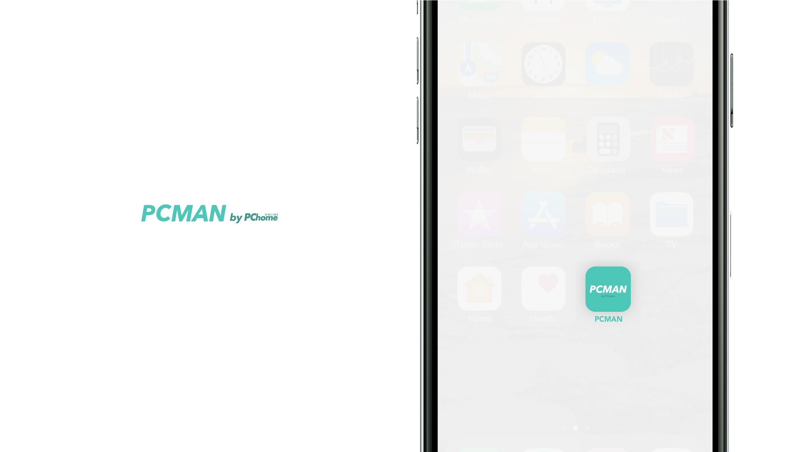
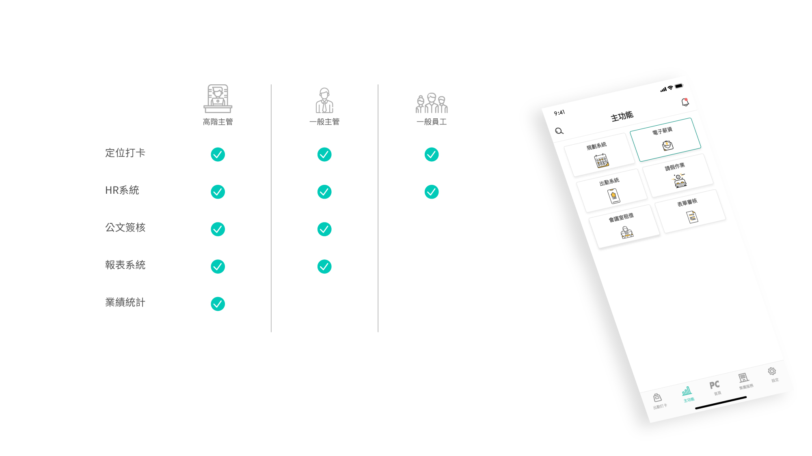
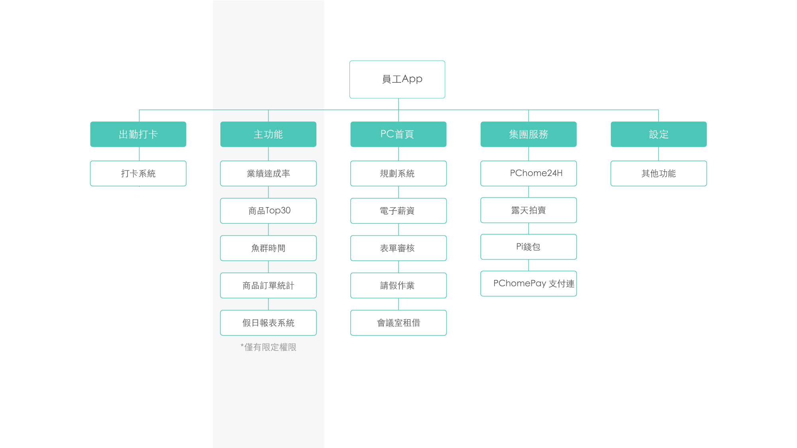
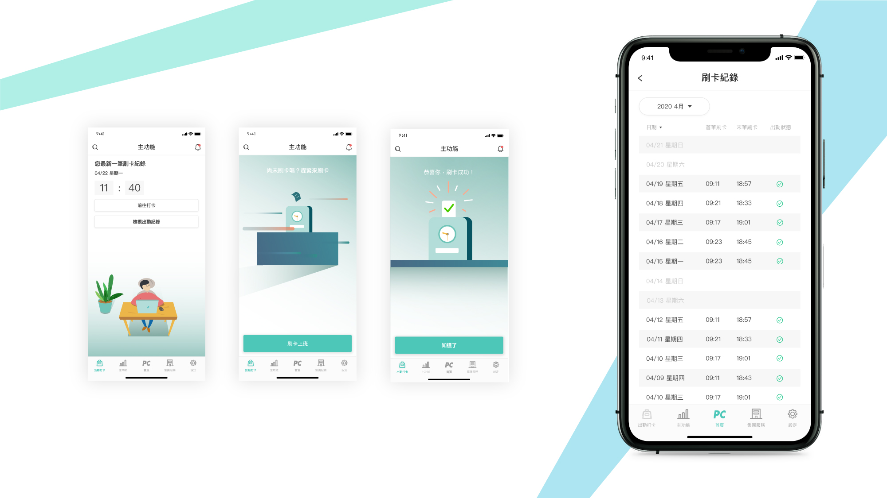
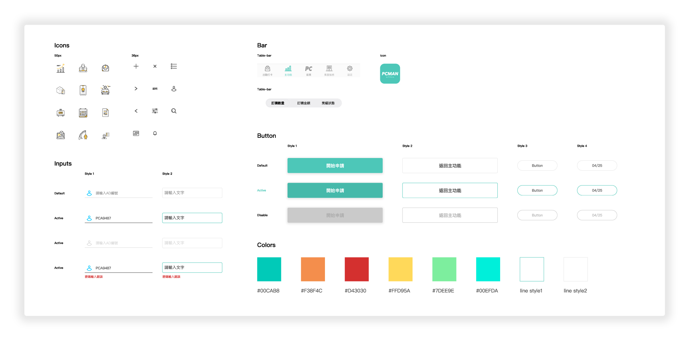
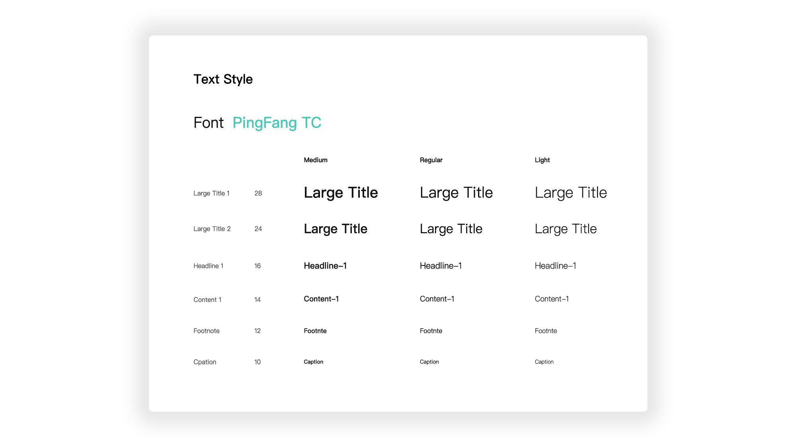
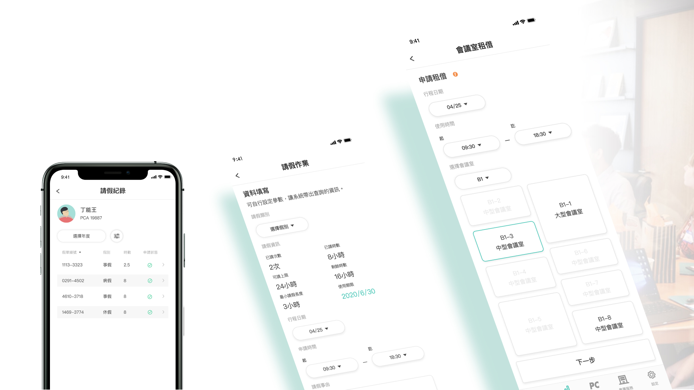
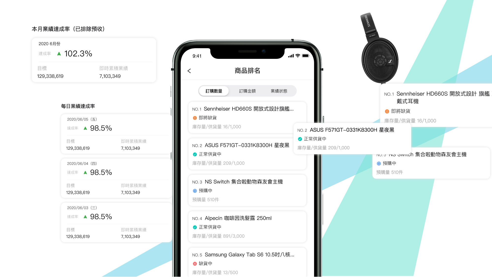
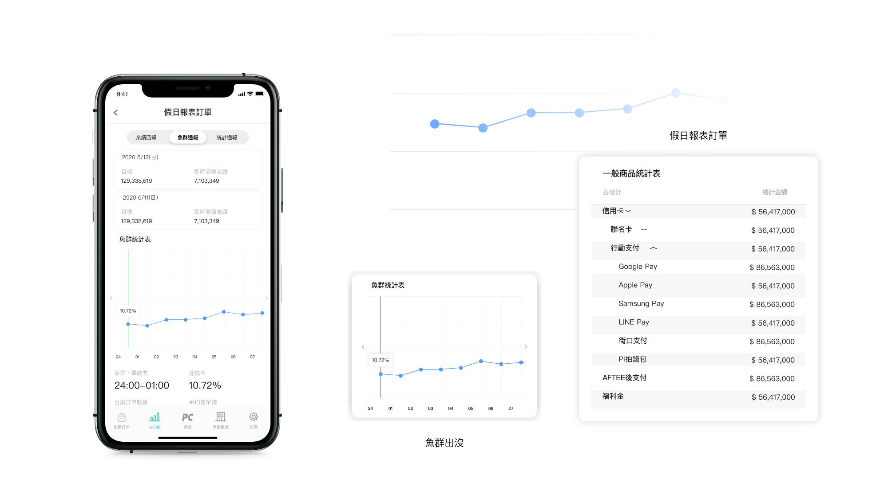

Yung Chia Tai
About
Works
PCMAN by PChome
2020 - Now
PChome是台灣最大電商平台，旗下擁有數百名員工，在眾多員工的情形之下，管理效率亦會下降，因此開發企業內部專屬的應用程式PCMAN，PCMAN可以讓員工在辦公室外處理各種疑難雜症，並且隨時掌握公司最新資訊。而PCMAN同時也是一款結合報表、人資、打卡等大小系統於行動程式的生產力工具，提供企業內部所有公司同仁方便的辦公體驗。

導入企業原有帳號一組帳號便能輕易登入
企業內部使用的後台系統本身即有一組帳號密碼，而該組帳號密碼透過Apollo人資系統，直接登入PCMAN，不需要要額外記住一組帳號密碼。
PCMAN的內容囊括所有一般員工最常使用的功能：打卡系統、即時訊息通知、出勤紀錄、薪資查詢、請假申請等功能。除此之外，主管階級的使用者附有特定權限才能使用的進階功能：例如戰情報表，業績報表、商品排名等功能，隨時掌握商品銷售最新狀態。

資訊架構 (IA)
建構清晰的功能層級，使系統功能分級更明確。

行動打卡-
不用再匆忙趕著刷卡上下班
建構清晰的功能層級，使系統功能分級更明確。



設計規範 (GUI)
建立Design Guide line，擺脫以往PChome的天藍色調，運用沉著穩重的 湖水綠作為PCMAN的主色調，以簡約輕巧的ICON設計使員工們能夠愉悅的使用程式。
行動員工系統
藉由行動員工系統，遠端傳送資料便能立即串流至後台，無論是申請休假、或者租借辦公室，多種需求都能在彈指之間迅速完成。

進階系統
進階功能只允許擁有權限的主管使用。行銷部、商品部主管可查看當日業績，與商品銷量，掌握商品銷售流向。

最高階報表系統
高階主管才有的最大權限，提供魚群統計與假日報表訂單功能，假日不需進入公司，也可查看整體業績。

Top